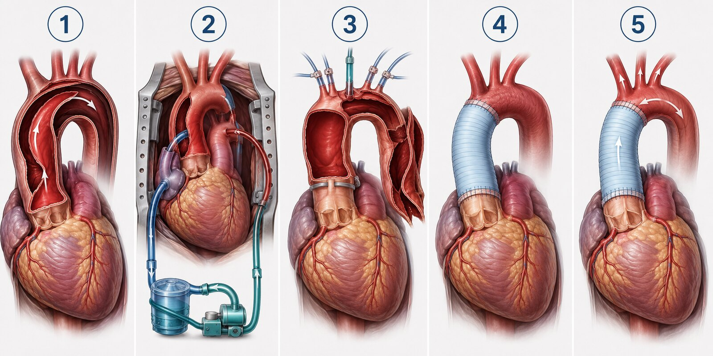

The presentation
Mr. R is 62 with long-standing hypertension, hyperlipidemia, and tobacco exposure. He develops abrupt severe chest pain radiating to his upper back, diaphoresis, nausea, and transient left-leg weakness.
The ascending aorta sits beside the aortic valve, coronary ostia, and pericardium. The same tear can therefore create acute aortic regurgitation, coronary ischemia, tamponade, stroke, or branch-vessel malperfusion.
How the aorta is repaired
The surgeon does not simply sew the flap closed. The proximal entry tear is removed or excluded, the damaged aorta is replaced with a synthetic graft, true-lumen flow is restored, and the root or valve is repaired when necessary.

Expose and define the injury
After anesthesia and transesophageal echo, a median sternotomy exposes the heart and aorta. CTA guides the plan; the actual tear, root, valve, coronaries, arch, and malperfusion determine the repair.
Establish cardiopulmonary bypass
Venous blood drains to the heart-lung machine, is oxygenated, and returns through a carefully chosen arterial site. The team confirms an effective true-lumen perfusion strategy. Cardioplegia protects the arrested heart while bypass supports circulation.
Cool, protect the brain, and remove the tear
Cooling reduces metabolic demand. For the open distal connection, systemic flow may pause during hypothermic circulatory arrest while selective antegrade cerebral perfusion protects the brain. The surgeon opens the aorta and removes the torn ascending segment and, when needed, part of the arch.
Rebuild with a synthetic graft
A woven tube graft is sewn to stable distal tissue, de-aired, and reperfused. Rewarming begins. The graft is connected proximally. In this case, the native valve is resuspended and the ascending aorta plus hemiarch are replaced.
Restart, test, and separate from bypass
The heart resumes beating as the team balances preload, rhythm, contractility, vascular tone, oxygenation, and acid-base status. Echo checks both ventricles, valve competence, regional wall motion, and the visible repair. Heparin is reversed, hemostasis obtained, and drains and pacing wires placed.
“Type A repair” is not one identical procedure
| Finding | Possible repair |
|---|---|
| Repairable root and valve | Valve resuspension with supracoronary ascending graft |
| Destroyed or aneurysmal root | Composite root replacement such as a Bentall-type operation |
| Suitable valve, diseased root | Valve-sparing root replacement in selected patients |
| Major arch tear or destruction | More extensive arch replacement; sometimes frozen elephant trunk |
The numbers tell a mixed story
Post-bypass echo shows mildly reduced LV and moderately reduced RV function. CVP is 14 mm Hg, lactate 4.2 mmol/L, urine output is falling, and pressure is low. The pattern suggests both impaired forward flow and inadequate vascular tone—but no single number proves the diagnosis.
Dobutamine
Primarily increases contractility and forward flow. Watch cardiac output, perfusion, rhythm, heart rate, ischemia, and whether vasodilation worsens pressure.
Vasopressin
Increases vascular tone through V1 receptors. Watch MAP and real organ perfusion—skin, limbs, kidneys, gut, lactate—not pressure alone.
A beginner's sequence
Airway
Tube, ventilator, breath sounds, gases, temperature, airway pressure, oxygenation, and RV effects of positive pressure.
Bleeding
Drain connection and patency, rate/character/trajectory, coagulation, products, temperature, and sudden cessation.
Circulation
Validate waveforms. Integrate rhythm, MAP, filling pressures, flow, drips, pulses, urine, lactate, venous saturation, and echo.
Neurologic
Know baseline. Pupils, awakening, commands, face, speech, and movement in every extremity when safe.
Organs
Renal, abdominal and limb assessment; glucose, electrolytes, acid-base state, pain, sedation, and skin.
Response
Validate → assess → integrate → notify → intervene per orders → reassess and document.
What would you do next?
MAP falls to 54—but the waveform changed after repositioning
Assess the patient while validating the transducer level, tubing, line, flush response, and comparison pressure per policy. Treating artifact can harm the patient.
Cardiac index stays low; CVP rises; urine output falls
Do not label this “needs fluid.” Consider RV failure, tamponade, high intrathoracic pressure, valve disease, or volume excess. Escalate for targeted hemodynamic and echo evaluation.
Chest-tube output suddenly stops as pulse pressure narrows
Inspect the system for a visible obstruction per policy and urgently escalate for possible tamponade and bedside echo. Never strip or milk tubes unless local policy explicitly permits it.
MAP improves, but one foot becomes cool with weaker Doppler flow
Escalate immediately. Compare color, temperature, refill, motor/sensory status, and signals. An improved arterial pressure does not prove regional perfusion.
Ventricular ectopy increases after dobutamine is raised
Assess stability, rhythm, ischemic changes, electrolytes and acid-base state; ensure pacing/defibrillation readiness and notify per acuity and orders.
Threats you must not miss
| Threat | Early clues | Nursing focus |
|---|---|---|
| Bleeding | Drain trend, hemodynamic decline, falling hemoglobin, coagulopathy | Trend precisely; warm; maintain access and product readiness; escalate |
| Tamponade | Falling output/pressure, rising filling pressure, narrow pulse pressure, drain cessation | Check patient and system; urgent surgical/echo review |
| Low cardiac output | Low CI/SvO₂, cool skin, oliguria, rising lactate | Integrate pump, preload, afterload, rhythm, hemoglobin and mechanical causes |
| Vasoplegia | Low pressure and SVR with preserved/high flow—or mixed low flow | Support tone per orders and assess actual organ perfusion |
| Stroke | Delayed awakening, focal deficit, seizure, pupil change | Activate urgent neurologic/surgical pathway |
| Malperfusion | AKI, abdominal findings/acidosis, cool weak limb | Serial organ assessment and immediate escalation |
| Graft/valve/coronary issue | New ischemia, murmur, dysfunction, refractory shock | Urgent echo and surgical evaluation; do not mask with drugs |
Test your reasoning
Why can dobutamine improve flow but lower MAP?
It can increase contractility while peripheral vasodilation lowers SVR. MAP reflects both flow and resistance.
Why does vasopressin not treat ventricular stunning?
It supports vascular tone but does not directly restore myocardial contractility. Excess afterload may make ejection harder.
Does a high CVP prove volume overload?
No. CVP is influenced by RV function, intrathoracic pressure, valves, tamponade, venous tone, and volume.
What indicates that support is working?
A coherent improvement in whole-patient perfusion: neurologic status, skin, urine, cardiac flow, venous saturation, lactate/acid-base trend, and organ function—not one isolated number.
TYPE A = ascending aorta involved → emergency open repair
1. Is the PUMP moving blood forward?
2. Do the PIPES have enough tone?
3. Is a MECHANICAL problem blocking recovery?
DOBUTAMINE → contractility / forward flow
VASOPRESSIN → vascular tone / MAP
VALIDATE → ASSESS → INTEGRATE → ESCALATE → REASSESS